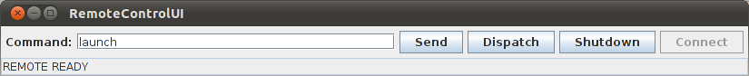

RemoteControlUI 是內建在 Remote Controller 裡的一支小程式，可以 "手動" 對 AUT 下達獨立的指令，也就是說中間可以摻雜其他人為或 monkeyrunner 自動化的操作，甚至中途有切換到其他 app 也沒關係。
$ cd $ROBOTIUM_RC_HOME/SoloRemoteControl/libs
$ java -cp robotium-remotecontrol.jar:safsautoandroid.jar:safssockets.jar \
com.jayway.android.robotium.remotecontrol.solo.RemoteControlUI

由於 RC 的文件並不多，再加上它是唯一非 JUnit-based 測試的範例，所以很值得研究。
By default, Robotium Remote Control is NOT implemented as jUnit tests. It does not abort or stop upon a test failure. This allows Robotium Remote Control to be used in many different types of testing frameworks including, but not exclusive to, jUnit. A future subclass of this Solo class and API can provide that same jUnit support, if needed.
— Solo
原始碼在 RemoteControlUI.java 在 $ROBOTIUM_RC_HOME/SoloRemoteControl 底下可以找到，也是 libs/robotium-remotecontrol.jar 的一部份。
src/com/jayway/android/robotium/remotecontrol/solo/RemoteControlUI.java..
093: public class RemoteControlUI extends JFrame implements SocketProtocolListener, ActionListener {
094:
095: SoloRemoteControl server = null;
...
100: String sendAction = "send";
101: String connectAction = "connect";
102: String shutdownAction = "shutdown_hook";
103: String dispatchPropsAction = "dispatchprops";
...
109: Properties props = new Properties();
110:
...
121: Properties fillProperties(){
122: props.clear();
123: props.setProperty("action", "launchapplication");
124: props.setProperty("windowid", "windowObject");
125: props.setProperty("componentid", "childObject");
126: props.setProperty("param1", "any parameter");
127: props.setProperty("recordtype", "t");
128: return props;
129: }
130:
...
181: void onConnectAction(){
182: disableInteraction();
183: status.setText("Attempting Remote Server Connection...");
184: server = new SoloRemoteControl(); //  185: server.addListener(this);
186: server.start();
187: }
188:
189: void onSendAction(){
190: disableInteraction();
191: status.setText("Attempting sendMessage: "+ cmdField.getText());
192: try{
193: server.performRemoteMessageCommand(cmdField.getText(), 3, 3); //
185: server.addListener(this);
186: server.start();
187: }
188:
189: void onSendAction(){
190: disableInteraction();
191: status.setText("Attempting sendMessage: "+ cmdField.getText());
192: try{
193: server.performRemoteMessageCommand(cmdField.getText(), 3, 3); //  194: }
...
207: }
208:
209: void onDispatchPropsAction(){
210: try{
211: server.performRemotePropsCommand(fillProperties(), 3, 3, 5);
212: }
...
225: }
226:
227: void onShutdownAction() { //
194: }
...
207: }
208:
209: void onDispatchPropsAction(){
210: try{
211: server.performRemotePropsCommand(fillProperties(), 3, 3, 5);
212: }
...
225: }
226:
227: void onShutdownAction() { //  228: disableInteraction();
229: status.setText("Attempting Remote Client Shutdown...");
230: try{
231: server.performRemoteShutdown(3,3,5); //
228: disableInteraction();
229: status.setText("Attempting Remote Client Shutdown...");
230: try{
231: server.performRemoteShutdown(3,3,5); //  232: }
...
245: shutdownRemoteControl();
246: }
247:
...
309: public void actionPerformed(ActionEvent e) {
310: // there is only one action: send
311: if(e.getActionCommand().equals(connectAction)) {
312: onConnectAction();
313: }else if(e.getActionCommand().equals(sendAction)) {
314: onSendAction();
315: }else if(e.getActionCommand().equals(shutdownAction)) {
316: onShutdownAction();
317: }else if(e.getActionCommand().equals(dispatchPropsAction)) {
318: onDispatchPropsAction();
319: }
320: }
...
331: protected void shutdownRemoteControl(){
332: disableInteraction();
333: connectButton.setEnabled(true);
334: try{server.shutdown();}catch(Exception x){} //
335: try{server.removeListener(this);}catch(Exception x){}
336: server = null;
337: }
...
353: }
232: }
...
245: shutdownRemoteControl();
246: }
247:
...
309: public void actionPerformed(ActionEvent e) {
310: // there is only one action: send
311: if(e.getActionCommand().equals(connectAction)) {
312: onConnectAction();
313: }else if(e.getActionCommand().equals(sendAction)) {
314: onSendAction();
315: }else if(e.getActionCommand().equals(shutdownAction)) {
316: onShutdownAction();
317: }else if(e.getActionCommand().equals(dispatchPropsAction)) {
318: onDispatchPropsAction();
319: }
320: }
...
331: protected void shutdownRemoteControl(){
332: disableInteraction();
333: connectButton.setEnabled(true);
334: try{server.shutdown();}catch(Exception x){} //
335: try{server.removeListener(this);}catch(Exception x){}
336: server = null;
337: }
...
353: }
直接操作 Solo 背後的 SoloRemoteControl。
| |
先停 remote service 再關 local runner。換作是 Solo 的話，就是先呼叫 shutdownRemote() 然後才是 shutdown()。
| |
這裡示範了 SoloRemoteControl.performRemotePropsCommand() 的用法，可以用來自訂 commands？
| |
除了 performRemoteShutdown() 跟 performRemotePropsCommand() 之外，SoloRemoteControl 另外提供了 performRemoteMessageCommand() 跟 performRemoteFileCommand()，分別是做什麼用的？
|